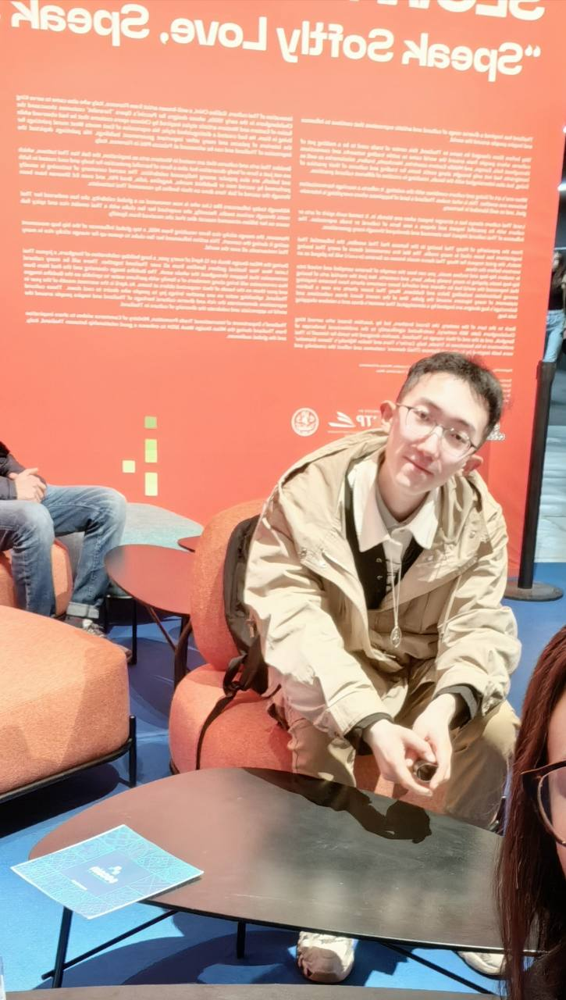

Insight
Transcending & Between Cultural Boundaries
—Inter-emotion throughout history and world outlook.
—A spectrum of affective expressions—simultaneously situated between sensus and multi sensus.
—Aims to transcend individual dimensions in pursuit of a networked articulation, catharsis, and interaction of human emotions across interconnected domains.
Portfolio


About me
I'm Gabriel, a designer, artist, scholar, and composer who blends traditional craft with cutting-edge techniques.
Services
Languages, Consulting, Design Systems, UI/UX, Music and Art Therapy, Front-end Development, Medieval Studies
Skills
HTML, CSS (Flexbox & Grid), JS, FL Studio, Ableton Live, Photoshop, InDesign, Python, Sibelius